Brigham Young University · Provo, UTJan 2024 – Apr 2028 (Expected)
B.S. Biochemistry; Minor in Computer Science, with machine learning courses
GPA 3.99 · Science GPA 3.99 · MCAT 519 (96th percentile)
Russell Mercer
Biochemistry, clinical software, and AI at Brigham Young University
Biochemistry student preparing for medical school, who designs the tools and interfaces clinicians and researchers use, from radiation oncology to the lab bench. Enjoys learning new things and being challenged in new ways.
The people who had to use this software were physicians and medical physicists, not engineers, and the tool they had was built around the processing steps rather than around anything they wanted to do. It ran one patient at a time. Every step was a button someone had to press in the right order, and if a step failed you found out by noticing that nothing happened. Nobody could tell whether a given number was trustworthy without going back to the raw images by hand.
So the design question was not how to make the screens nicer. It was what the users were actually trying to decide, and what the old tool made them do instead.
I watched what people asked for and designed around the decisions rather than the pipeline.
A physician wants to know what changed between treatment days. That became a viewer that lines up anatomy, contours, and parametric maps slice by slice, with whole-tumor histograms per day, so the comparison is on one screen instead of in somebody's memory. An early June version only stacked the same slice across days; after the physicians used it, the July version added the histograms and the per-day parameter comparison, because what they wanted was the distribution, not the picture.
A physicist wants to know whether a number is real. That became the fit checker: click any voxel, see the measured signal with both model fits drawn through it, export the figure and the data. It exists because the question kept coming up in meetings and the old answer was a shrug.
A physician wants to act on the result. That became the threshold creator, which applies a cutoff to outline the treatment-resistant core and exports contours the treatment planning system can import. Design-wise this was the hardest piece, because the output had to land inside software the physician already uses rather than ask them to learn mine.
Everyone wants figures. That became the image creator: pick slices and structures, preview at low resolution, then render publication panels. I also set up an HTML preview so drafts could be shared with the physicians without sending anything that needed installing.
And nobody wants to babysit a queue. The bulk runner takes a list of patients, gives each one a tab, schedules CPU and GPU work, watches disk space, archives finished patients, and raises errors where the user is already looking.
The application went from one person's workstation account to the team that maintains clinical software, and it processed 76 patients in about 2.5 days where the old workflow had taken a week for 10. A physician used the diffusion maps I loaded into the contouring system as an overlay to redo 46 contours, which is the clearest evidence I have that the interface changed what someone could do rather than just how it looked.
What I would do differently: I designed most of this from conversations and from watching meetings, not from sitting beside someone while they used it. That is the gap in my design process, and I know it.


A personal project I built to track my own blood pressure and heart rate. It logs a reading in a few taps, records the context that changes the number (position, arm, time of day, and an orthostatic POTS check), and keeps the history.
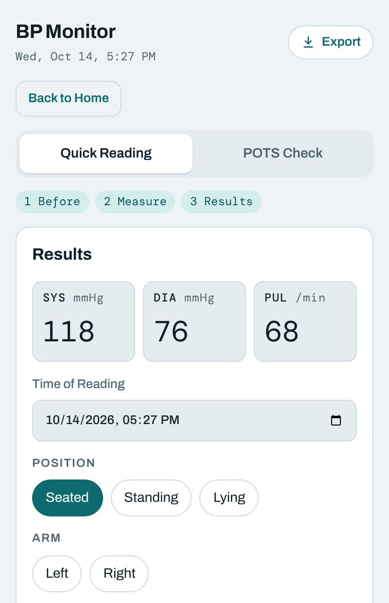
The design problem is the same one every health app has: a single number means little, so the app shows each reading against the AHA cutoffs and rolls the history into averages by window and by context, rather than leaving a wall of numbers to read.
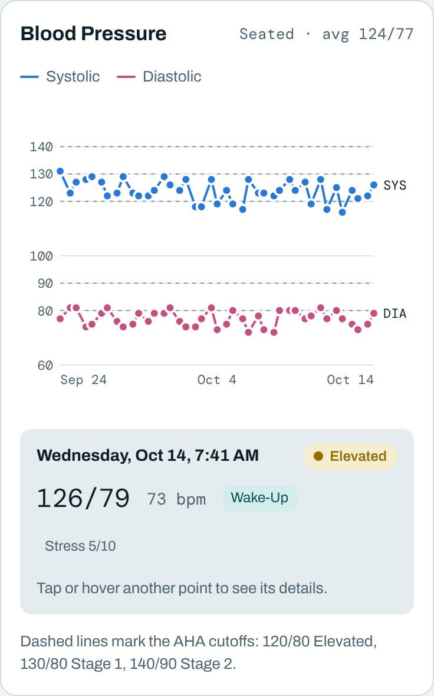
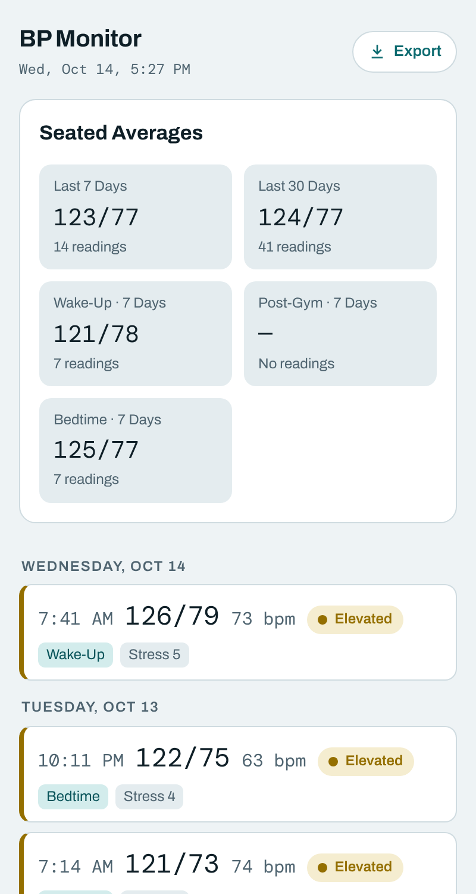
Anki is widely used by medical students, but its interface has accumulated years of features and settings that can make daily studying feel more complicated than it needs to be. Its underlying spaced-repetition scheduling is valuable; the challenge is making the study experience simpler and more manageable, especially when users face hundreds of due cards.
I am building Cadence as a streamlined alternative using React, TypeScript, and the FSRS scheduling algorithm, which models memory to determine when cards should be reviewed. The design focuses on reducing friction: making each card easy to review, showing users how much time their queue will take before they begin, and keeping frequently used settings accessible without overwhelming the interface.
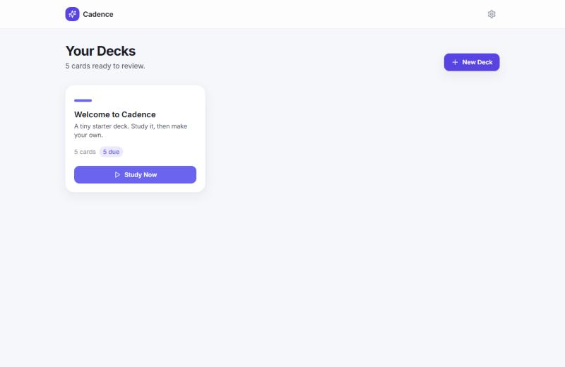
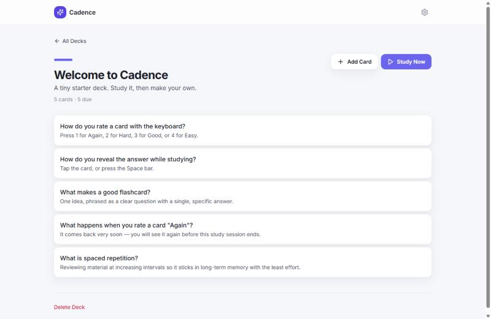
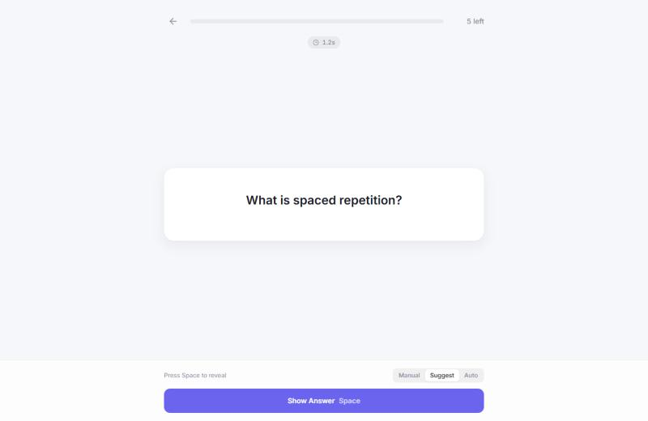
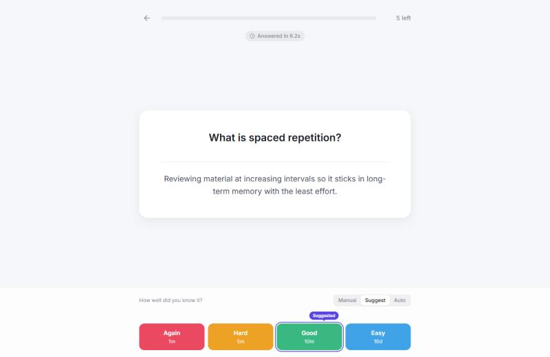
In addition, the app will include LLM incorporation, altering each card to enhance the learning process.
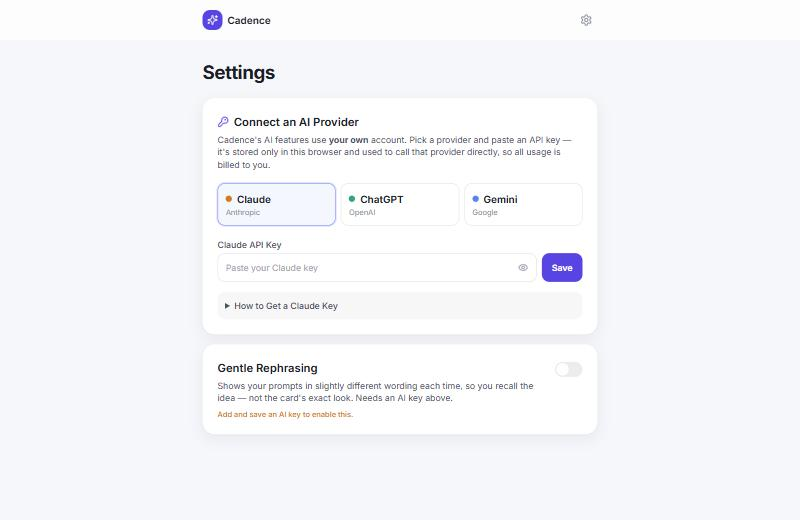
The project is an ongoing early-stage. The source repository is private, so screenshots currently provide the best view of the application.
The RefleXion manuscript needed to explain how PET-guided radiation delivery differs from conventional image-guided delivery. The distinction is not easy to communicate to readers unfamiliar with the system, particularly within a strict word limit and alongside nearly 4,000 words of supplementary material. A side-by-side visual was more effective than trying to explain both workflows in prose.
I designed a flowchart showing both treatment pathways in parallel, from simulation through delivery, making the key differences immediately visible. I built the figure in PowerPoint with Claude assisting directly in the file. I directed the layout and scientific logic while using the agent to handle alignment, color, and scaling.

I then developed a figure-generation workflow that converts the PowerPoint slide into an image and combines it with panels generated in R. This allows the complete figure to be rebuilt automatically from its source components whenever the underlying data or manuscript needs to change.
The figure is included in the manuscript, which is currently in final co-author circulation.
I build tools that make scientific figures reproducible from the moment they are configured. Rather than manually assembling plots in software, I have developed exportable interfaces that let researchers select the data, images, measurements, and visual elements they want to present, preview the result, and generate publication-ready figures from the same underlying configuration.
For the radiation oncology studies, I wrote R pipelines that generate figures and tables directly from raw data exports. Approximately 20 figures were developed for the RefleXion manuscript, alongside six automatically generated tables. When an error in the lung study was found to be capping a key measurement, correcting the data and rerunning the pipeline regenerated the figures consistently without manual editing.

I also developed an image-generation interface within the imaging application. Researchers can select image slices and anatomical structures, arrange them into panels, preview the layout at low resolution, and export publication-quality images. The interface preserves those selections and settings so that figures can be regenerated consistently, including at resolutions beyond the scanner's native output when needed.

The goal across these projects is to make a figure an exportable, reproducible product of its underlying data and configuration, rather than a manually assembled image that must be recreated whenever something changes.
I have presented research six times across three fields, adapting the visual presentation to different audiences, disciplines, and formats. Each presentation requires more than summarizing results; it requires deciding what an audience needs to understand, what evidence will make the findings credible, and how to organize the information so that the central argument is easy to follow.
For the Utah Cryo-EM Symposium, I designed Can an AI Agent Collapse the Cryo-ET Learning Curve?, a poster introducing AI-assisted image processing to structural biologists who may be skeptical of its reliability. Rather than leading with the technical pipeline, I organized the poster around a documented record of the agent's successes and failures, making its actual capabilities and limitations the focus.

In August 2026, I designed slides for the Simmons Center presentation of our summer radiation oncology research and collaborated with another intern on a poster for the BYU Medical Society. Earlier presentations included two appearances at the BYU Student Research Conference and a presentation at the American Chemical Society spring meeting in Atlanta, showcasing my work in the Stowers chemistry lab.

Across these projects, I pay particular attention to how people actually engage with scientific visuals. Posters are rarely read from beginning to end, so I use clear section numbering, visual hierarchy, and strategically placed results to let viewers enter the presentation at different points and still follow the research.
This summer I participated in the Summer Premedical Research Internship. Before a poster session, I realized that they needed a visual identity. I built the logo as a parameterized design system using Claude. I separated its geometry into independently adjustable variables, including the overall form, branching angle, arm curvature, head shape, stroke weight, and DNA rung treatment. This replaced a collection of 13 fixed logo variations with an interactive system capable of generating combinations that had not previously been explored. For example, narrowing the branching angle reduced the horizontal spread from 92 to 64 units and changed the rise-to-spread ratio from 0.83 to 1.41, shifting the silhouette toward a recognizable Y.
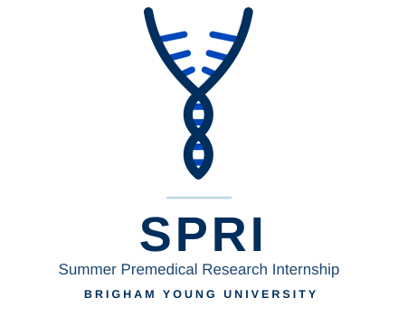
I built the resulting design kit as an interactive HTML application with four presets, allowing reviewers to adjust the design parameters and compare variations themselves rather than request individual revisions. The kit was submitted to the internship organizers.
Open the interactive logo generator to set the parameters and compare variations yourself.
Nearly everything on the Design tabs was built with an AI coding agent doing the typing. I want to be precise about what that did and did not mean, because the distinction is the whole point.
The clinical imaging application took weeks instead of months because the agent handled the parts that are mechanical: wiring a viewer, scheduling GPU work, converting a slide to an image and assembling it with plot panels. Every decision about what the user needed, which comparison a physicist actually makes, and where a number should not be trusted came from me, sitting in meetings with the people who would use it. The agent never met them.
The limit showed up clearly. Our research was new enough that there were few existing patterns to draw on, and that is exactly where this kind of tool is weakest, since it works from what has been done before. Where the work was ordinary, it flew. Where the work was novel, I was back to thinking.
In the Jensen Lab I am now testing that boundary on purpose, logging every agent recommendation in a processing pipeline as accepted, overridden, or an error I caught.
I represented the BYU AI Association at the Ballard Center's AI for Social Innovation Conference at Aspen Grove on October 21, 2026. I was invited to participate in the Data Sovereignty and Inclusion working group, alongside a UN ambassador, the COO of a Māori media organization that developed a community-owned speech model, and representatives from industry and other universities. Our discussion focused on who should own community data, the AI models trained on it, and the value those models generate.
From our discussion, we are creating a social contract to be proposed at the United Nations in Geneva.
I joined Dr. Grant Jensen's lab in August 2026, where I work with cryo-electron tomography (cryo-ET). The technique involves rapidly freezing cells to preserve their native structure, then imaging them from multiple angles to reconstruct their internal organization at molecular resolution. My work in the lab has two main parts: imaging bacteria and parasites that have not previously been studied using cryo-ET, and exploring AI agents and skills to help researchers carry out the image-processing workflow.

I proposed two projects involving organisms associated with tick-borne infections. Both can occur alongside Lyme disease, and patients may be infected with multiple organisms at once. I have tested positive for both of these pathogens through PCR. Neither genus has been studied using cryo-ET, so these projects will provide the first structural images of either organism using this technique.
Bartonella henselae a gram-negative bacterium primarily transmitted through scratches or bites from infected cats and is the primary cause of cat-scratch disease. It commonly causes swollen, tender lymph nodes, fever, fatigue, and headaches, but can occasionally lead to more serious neurological, ocular, or cardiac complications. Its cells are approximately 0.3–0.5 µm wide, allowing them to be frozen and imaged whole on BYU's Krios microscope without additional thinning. They also divide approximately every three hours, making it practical to maintain cultures.
There is also an interesting biological question behind the project. B. henselae has a dense surface layer of adhesins, and one published hypothesis proposes that this layer interferes with the bacterium's secretion system, which it uses to deliver proteins into host cells. This hypothesis is based on observed phenotypes rather than direct structural evidence. Cryo-ET could help determine whether the proposed interaction is supported by the organism's actual structure.
The second project focuses on Babesia duncani. These parasites invade red blood cells using a specialized structure at one end of the cell called the apical complex. They are a tick-borne, malaria-like parasite that infects red blood cells and causes babesiosis. Symptoms commonly include fever, chills, fatigue, sweating, headaches, and hemolytic anemia due to the destruction of infected red blood cells. Severe infections can cause organ dysfunction, particularly in immunocompromised individuals or those without a functioning spleen. A 2026 study identified a previously unreported tubulin rosette in the apical region of a related species using light microscopy. However, that technique cannot resolve the rosette's detailed molecular organization. Cryo-ET could provide a closer look.
This project presents additional technical challenges. Babesia cells are too thick to image intact, so they will require focused ion beam (FIB) milling at the University of Utah. No established FIB-milling workflow exists for Babesia, so developing and optimizing one is part of the project.
I developed the proposals and experimental plans for both projects, which Dr. Jensen approved in October 2026.
These studies are promising for biology and medical science because as someone learns the structure of a bacteria (through cryo-ET) it becomes a lot easier to develop therapeutics, etc for them.
Processing cryo-ET data requires coordinating approximately a dozen specialized programs, each with its own parameters and potential failure points. Learning the workflow can take a researcher several months. Data in general is very difficult to process, and it is usually the bottle neck of this field of research.
In a separate project, I developed a workflow in which a general-purpose AI coding agent operates this processing pipeline. I tested it on 39 E. coli tilt series. The agent can recommend and execute processing steps. I also logged each recommendation as accepted, overridden, or an error identified by the human reviewer. This makes it possible to evaluate the agent's performance rather than simply judging whether it appears to work.

During testing, the agent identified two incorrect values recorded by the microscope and independently checked the tools it was using. It also made mistakes, which have been documented as part of the evaluation. In every case, it eventually caught itself. I presented this work at the Utah CryoEM Symposium on October 8, 2026. A manuscript is currently in preparation, after a few instructory videos will be made. This is a collaborative project with Chitral Chatterjee.

Another project in the lab addresses something that is difficult to learn from published papers: the practical knowledge researchers accumulate while developing and troubleshooting experiments. Papers generally describe the final methods, but not necessarily the approaches that were abandoned, the problems encountered, or the small adjustments that made a protocol work.
Dr. Jensen proposed creating a database to preserve this knowledge. I am developing an AI agent that interviews authors of cryo-EM papers and collects details about their experimental decisions and troubleshooting processes. It will then compile all of their information into a universal database that researchers around the world can use to learn and to train their AI agents. The project is still in development, and a working system has not yet been completed.
I spent two years in Dr. Kara Stowers' inorganic chemistry lab researching metal-organic framework (MOF) thin films. MOFs are porous crystalline materials with potential applications in catalysis and chemical separations. Our research focused on growing these films directly on untreated substrates, without the self-assembled monolayers typically used to initiate growth, while controlling the incorporation of a second metal.

I synthesized copper and copper-zinc framework films through sequential spin coating, cycling metal and linker solutions onto the substrate. I characterized the resulting films using scanning electron microscopy and measured film thicknesses in ImageJ. Our work examined how growth temperature affected film coverage and crystallite size.

I also spent considerable time building, troubleshooting, and maintaining two custom laboratory instruments: a flow reactor used for catalysis experiments and an ultra-high-vacuum chamber equipped with X-ray photoelectron spectroscopy and a mass spectrometer. The chamber operated at pressures approaching 10⁻¹⁰ Torr. Maintaining it involved leak checking, bakeouts, flange work, and troubleshooting the vacuum system. I also helped rebuild the spin coater's vacuum system when it failed.


Alongside my own work, I trained two newer students in spin coating and scanning electron microscopy. The research resulted in a publication in Langmuir, where I am a second author. I presented the work at the BYU Student Research Conference in 2025 and 2026 and at the American Chemical Society spring meeting in Atlanta in March 2026.
A second manuscript examining decomposition chemistry using the vacuum chamber is in preparation. Although my lab position ended in May 2026, I have continued contributing to that manuscript.
In addition to extensive laboratory experience, my coursework at BYU has included both foundational science classes and upper-division laboratory courses.I have completed almost the entire biochemistry major. These courses have given me a background in the molecular structure, function, and interactions of biological systems, with an increasing emphasis on the experimental methods used to study them. In terms of lab courses, I completed CHEM 384 (Biochemistry Methods), MMBIO 241 (Molecular and Cellular Biology Lab), and CELL 363 (Advanced Physiology Lab), which gave me practical experience applying concepts from biochemistry, molecular biology, and physiology in a laboratory setting.
This semester, I am taking CHEM 584 (Advanced Biochemistry Methods 1), a master's-level course focused on more advanced biochemical laboratory methods. The course has us mutate CMG2, a human receptor protein commonly known for its involvement with Anthrax. We had to find our own mutation, develop our own primers, clone our mutation, and express the mutation. In Winter 2027, I will continue the study in CHEM 586 (Advanced Biochemistry Methods 2), where we will express our mutated proteins and visualize how they effect the human cell. I also plan to take CHEM 489 (Structural Biochemistry) continuing into structural biology and advanced experimental techniques.
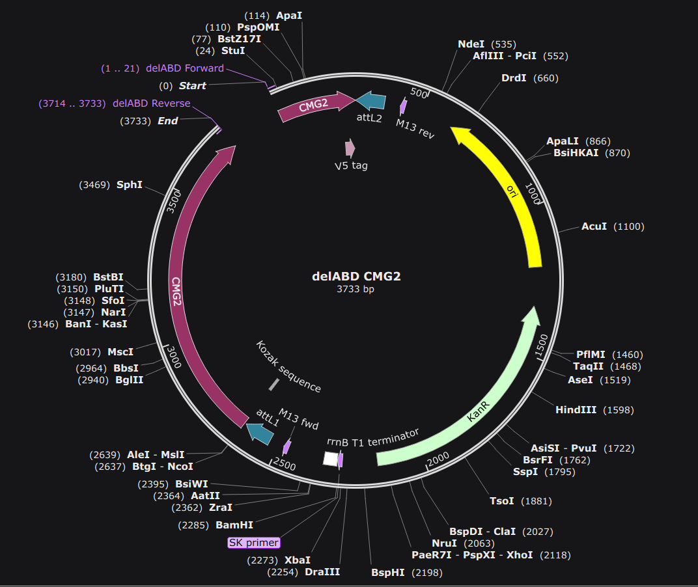
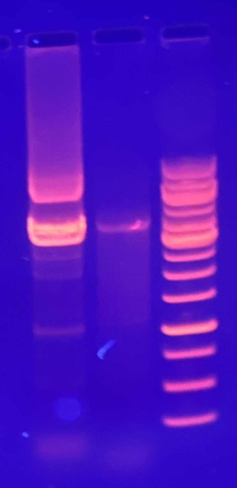
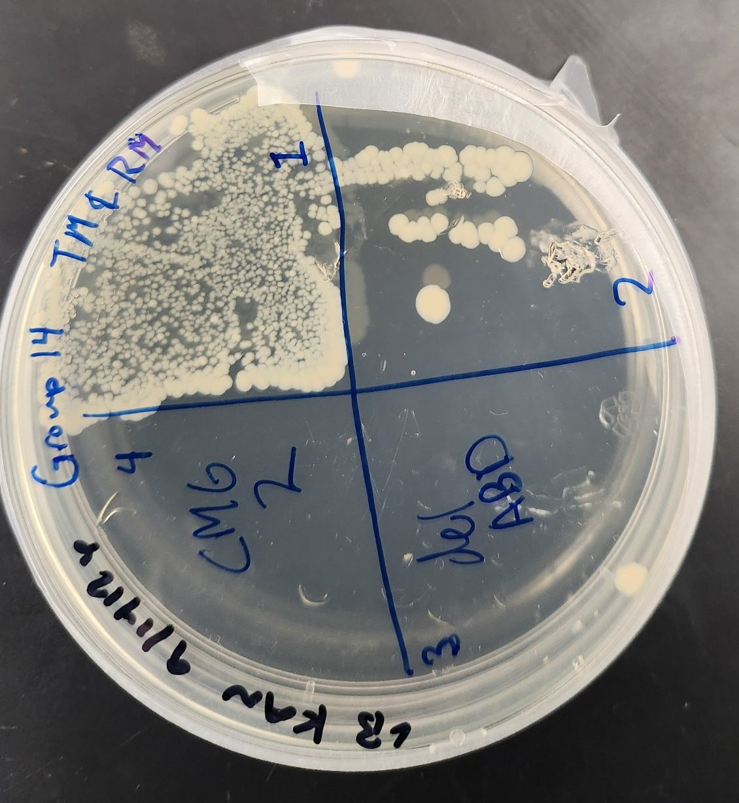
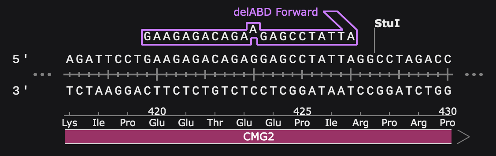
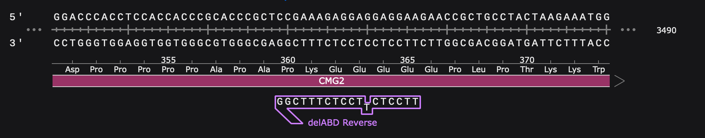
Provo, UT · rmercer2@byu.edu · linkedin.com/in/russell-mercer · orcid.org/0009-0003-6387-969X · github.com/mercer-science